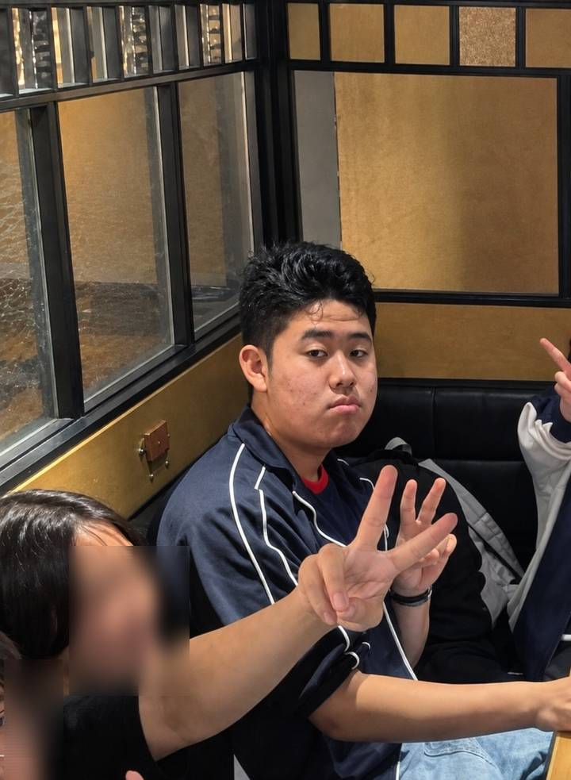
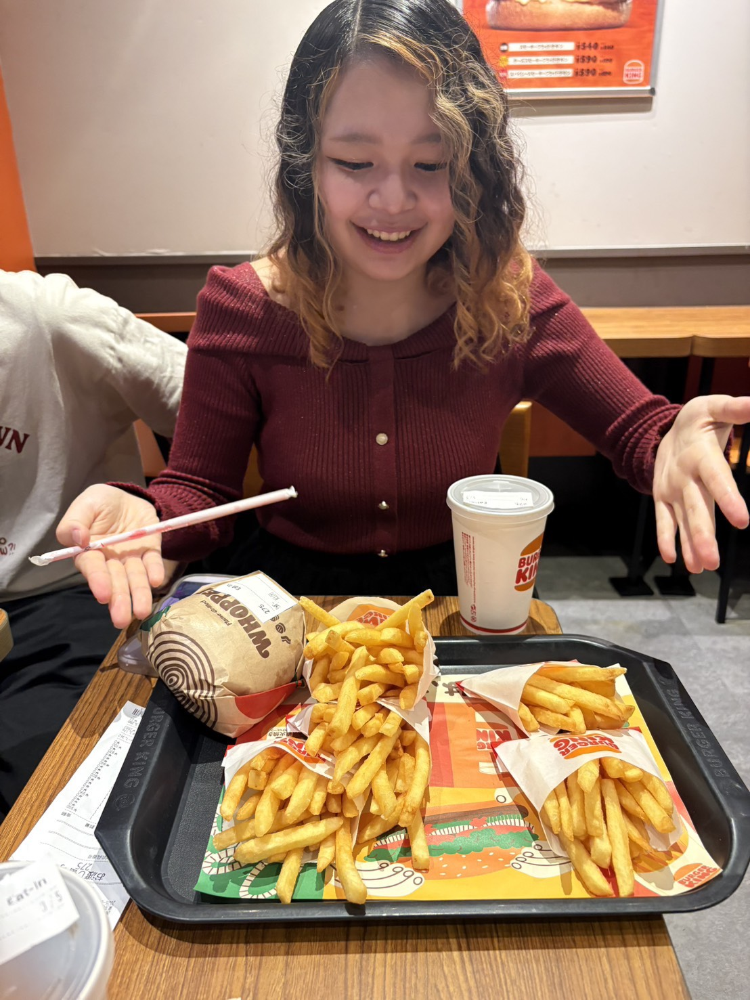
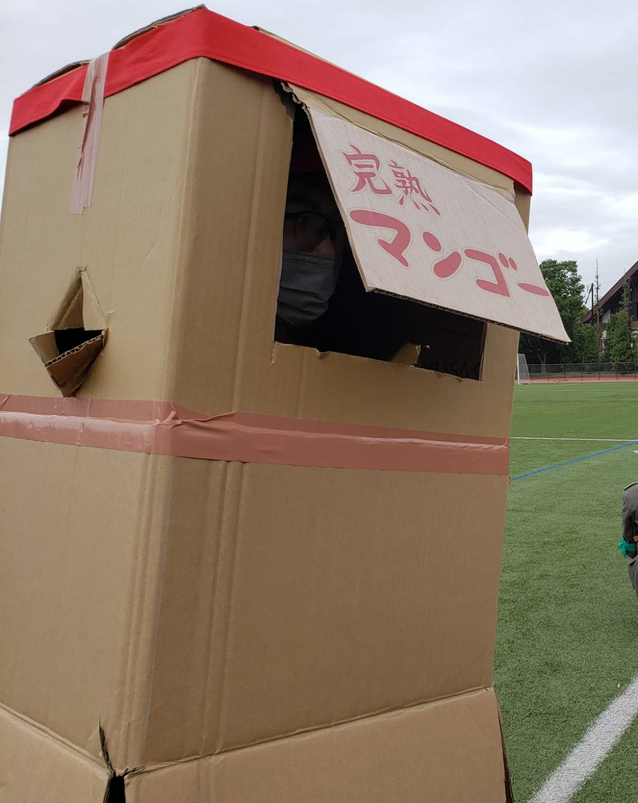
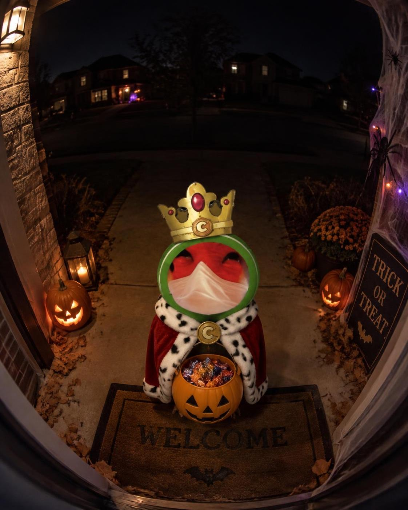
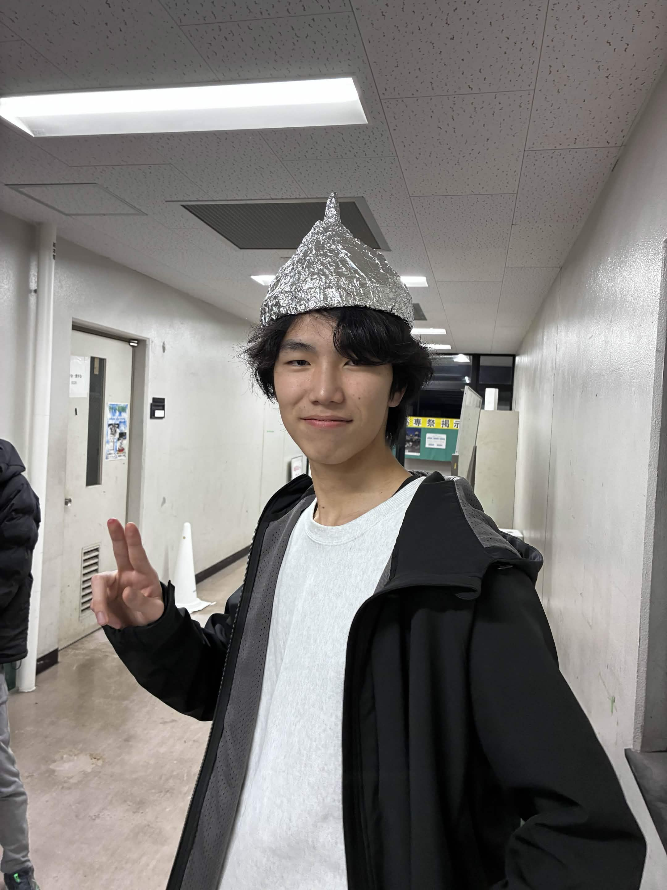
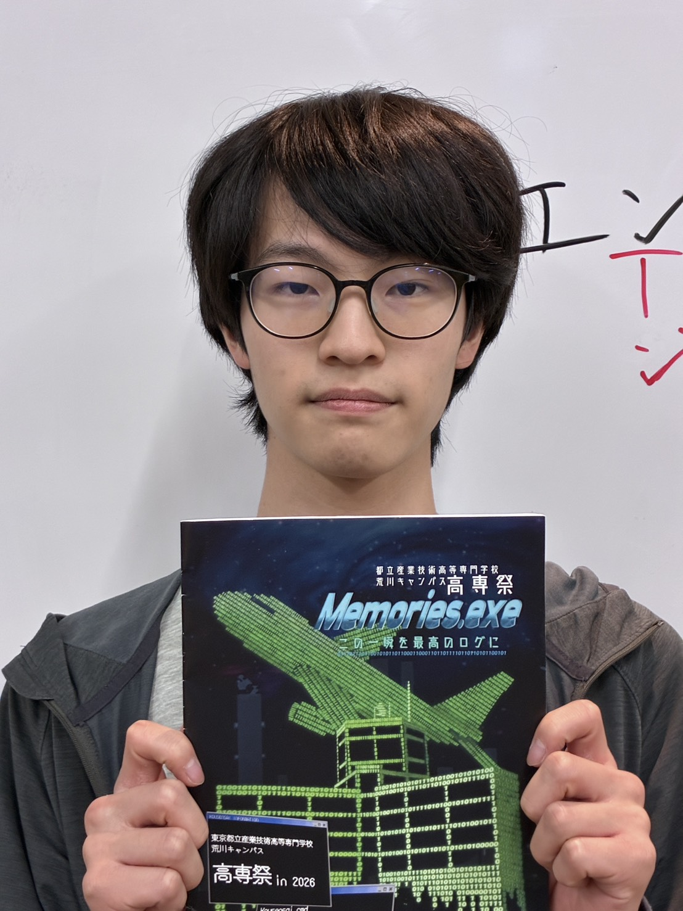
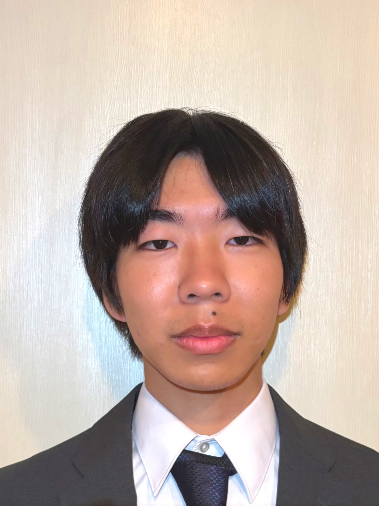
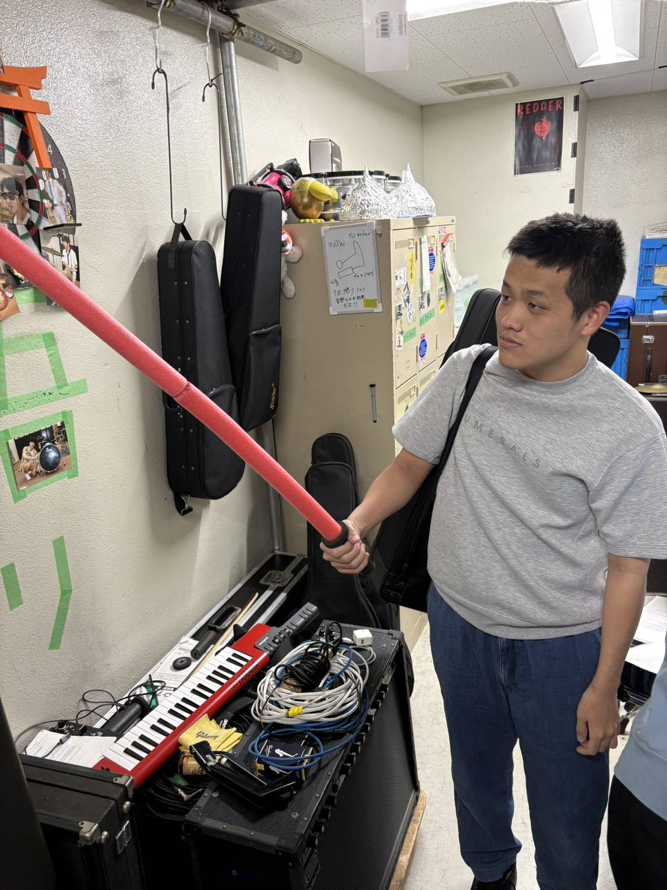
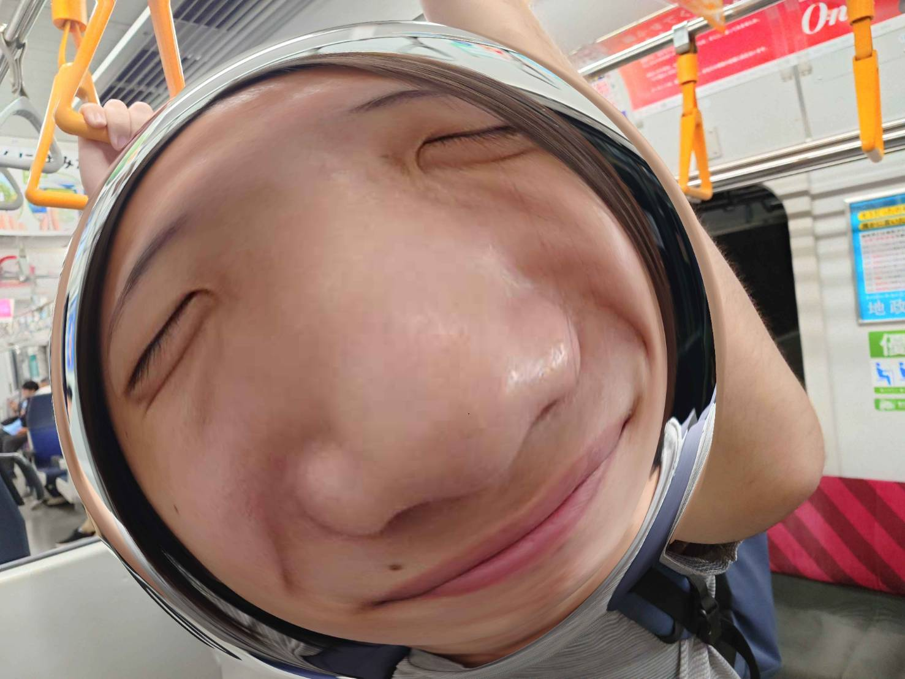

私たち音楽部はNFJO（North Five Jazz Orchestra）という名のビッグバンドで演奏活動をしています。
構成楽器は様々で、トランペット・トロンボーン・サックスの管楽器隊、ギター・ベース・キーボード・ドラムのリズム隊、その他ヴァイオリン・シンセサイザーなど、多様な楽器を扱い、ファンクやフュージョン、ラテン、またはテクノなどの幅広い音楽に挑戦しています。
日々の練習と様々な準備の成果をとくとごらんあれ！
近澤 瑛太郎 (A.Sax)
1年の近澤です。
口内炎が治りません助けてください。

髙橋 爽 (Drs.)
高専一年髙橋爽です。
あだ名はきれいなジャイアンです。
ドラムの経験は無かったので、足を引っ張らないよう頑張って練習してます。
温かい目で見守ってください
海藤 隆太 (T.Sax. | B.Sax)
楽譜読めないので海に来た

鈴木 碧海 (B.Sax | Fl. | Pno)
ポテト爆食い女

谷川喜彦 (E.B. | Drs.)
なんもねえ なんもねえ なんもねえ なんもねえ

小岩礼 (E.G. | E.B. | Pno. | Drs. | PAEngr.)
裏方なのになぜか長をつとめているバンドマスターであります.
帰りたいです.

鈴木 大洋 (E.G. | E.B. | Pno.)
ミジンコのバタフライエフェクト
下原 慧斗 (Drs.)
テキストを入力

灰野 陽向 (S.Sax. | A.Sax.)
私が作りました

山田 豊太郎 (A.Sax.)
曲数おおしぎ〜〜

柳 悠心 (T.Sax.)
最近また体重増えてきた
菅野 真斗 (E.B)
誰かが言った、肉は熟成する程ウマくなる─
彼はそこに居た。ただ、何もせず居続けた。練習に暮れる音楽部員、その横でただ佇む彼。
音楽部にとってそれこそが正解だった。そうすることのみがただ唯一彼の使命であった。来たるべき日を待ち、爪を研ぎ続けてきた。
今正に、解放の時である。彼は充分に熟成した。溢れんばかりの旨みとメロディを今解き放たんとしている。
世界には、新たな伝説が作られる時が来た。
「─指板って、どうやっておさえるの─」

服部 優時 (Drs. | 二胡)
笑顔が素敵です